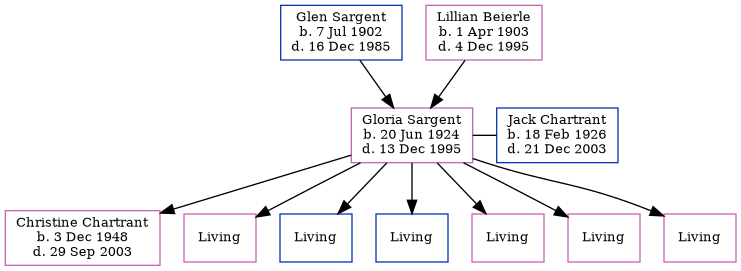

Gloria B Chartrant (née Sargent) 1924 - 1995 [ Home ] | [ Calendar ] | [ Surnames Index ] | [ Family History ]The 2nd of 6 children of Glen Sargent (a barber) and Lillian Beierle Gloria Sargent , the fifth cousin once-removed on the mother's side of Nigel Horne , was born in Stromsburg, Polk, Nebraska, USA on 20 Jun 19241,2,3 and married Jack Chartrant (with whom she had 7 children: Christine Ann , Nicole Lynn , John , Thomas , Mary , Vanessa and Andrea , along with 6 surviving children) in New York, USA on 21 Jun 1945.
Throughout her life, she lived at 990 E Street, David City, Butler, Nebraska, USA on 15 Apr 19304 ; and at 979 D Street, David City, Nebraska on 12 Apr 19405 .
She died on 13 Dec 1995 in David City, Nebraska2,3 and was buried there at Saint Marys Cemetery after 13 Dec 19952 .
Parents Glen Russel was born on 7 Jul 1902Lillian Winifred was born on 1 Apr 1903Children Christine Ann was born on 3 Dec 1948Citations Social Security Death Index - Findmypast U.S., Find A Grave Index, 1600s-Current Ancestry.com Operations, Inc. United States Billion Graves index - Findmypast US Census 1930 - Findmypast (was age 5 and the daughter of the head of the household) US Census 1940 - Findmypast (was age 15 and the daughter of the head of the household) Media 1930 US Census 1940 US Census 1930 US Census Transcription - USC-1930-004951855-00631-009 1940 US Census Transcription - USC-1940-1476364958 1930 US Census Transcription - USC-1930-004951855-00631-011 Social Security Death Index - USBMD/SSDI/505262639 United States Billion Graves index - US/BMD/BILLION023603391 Family Tree Map
Generated by ged2site . Last updated on Feb 19, 2025